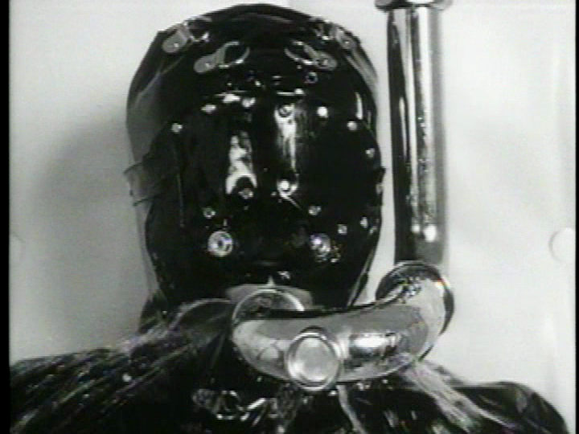

Nine Inch Nails Chronology
Broken
Broken (also known as Halo 5) is an EP released on September 22nd 1992. Although not technically so, Broken is usually considered Nine Inch Nails' second major release after Pretty Hate Machine since it consists entirely of new material. The EP was recorded in secret, in order to avoid interference from TVT Records.
It was followed later that year by Fixed, a companion EP of remixes of the songs on Broken. The typeface used on Broken (and Fixed) is Akzidenz-Grotesk Black, which was also used to create the Nothing Records logo.

Halo 5: Broken
Track Listing
- "Pinion" – 1:02
- "Wish" – 3:46
- "Last" – 4:44
- "Help Me I Am In Hell" – 1:56
- "Happiness In Slavery" – 5:21
- "Gave Up" – 4:08
- "Physical" – 5:29
- "Suck" – 5:07
Background
After the commercial and critical success of Pretty Hate Machine (1989), TVT Records, the first record label to sign the band, pressured Trent Reznor to record a very similar album in the hope that it would have similarly successful singles. Steve Gottlieb, the CEO of TVT Records, was insistent that he would not release anything other than an album very similar to Pretty Hate Machine. Reznor demanded his label terminate his contract, due to their restriction of his creative control of the Nine Inch Nails project. They ignored his plea.
Reznor then objected to the label's attempted interference with his intellectual property. This much-publicized feud with TVT led Reznor to use a variety of monikers for the production of his next studio release. Reznor later said that he hated TVT, in part due to their classification of Nine Inch Nails as a synth-pop band. He reached a deal with the record label Interscope Records:
Music and lyrics
Heavier than Pretty Hate Machine, Broken takes influences from industrial metal bands such as Ministry and Godflesh. There are louder mixes and more distortion on every instrument, including John Lennon's Mellotron MKII heard most particularly on "Gave Up". Reznor said he wanted the album to be "an ultra-fast chunk of death" for the listener, something that would "make your ears a little scratchy". In the liner notes, Reznor credited the 1991 Nine Inch Nails touring band as an influence on the EP's sound.
The lyrics are a critique on society, the majority of its themes involve angst, control and dependency struggles. The second promotional single from the EP, "Wish", includes the expletive fuck thrice, used on the lines "Now there's nothing more fucked up I could do", "I'm the one without this soul/I'm the one with this big fucking hole" and "Gotta listen to your big time hard line bad luck fist fuck."
Clocking at roughly one minute, "Pinion" is one of the shortest Nine Inch Nails songs. It features a series of short, ascending, distorted guitar power chords and a collage of atmospheric loops, including a reversed sample of David Bowie's "It's No Game" (which is not credited in the artwork for Broken). A portion of this is used as one of the guitar riffs in "Wish", one of the two promotional singles released from the album. "Help Me I Am in Hell", another instrumental, ends with another uncredited sample, this time from The Empire Strikes Back (1980).
There are two bonus songs, which follow 91 silent, one-second tracks (numbered 7 through 97) on most CD copies, but were included as a separate 3" CD or 7" record with early pressings. "Physical" is a cover of the Adam and the Ants song "Physical (You're So)", originally released on the Kings of the Wild Frontier LP." In 1995, Nine Inch Nails performed "Physical" live with Adam Ant for two nights in a row. After Reznor introduced Ant and Marco Pirroni on the second night, Ant proclaimed to the audience, "It's nice to be on stage with the best fucking band in the world." "Suck" was written by Pigface, whose ever-changing lineup once included Reznor. The slower, sparser, radically different original version appeared a year earlier on Pigface's Gub album.
Release and reception
"It's heavy", wrote Danny Scott in Select, "it's loud and it'll rip your stinkin' head from your shoulders if you so much as breathe without permission." "Beats are hammered home with the gleeful force of a dentist's drill", said Peter Kane in Q, "while layers of rabid guitars and Reznor's spiteful voice pile on the nihilistic agony." "Reznor has shaken off the shackles of influence", observed NME, "and found his own suitably idiosyncratic niche." "Like a harrowing rape account", marveled Making Music, "it's an intensely vicious and shocking 30 minutes."
Writing for The Baltimore Sun, J. D. Considine stated: "Harder than Ministry, hookier than Nitzer Ebb, this EP is everything industrial music should be." CMJ described Broken as "an astonishingly cold, brutal and bleak EP."
The EP was certified platinum by the Recording Industry Association of America (RIAA) on December 18, 1992, despite a complete absence of touring in support of it. The first promotional single, "Happiness in Slavery", received moderate airplay, but its video's depiction of Bob Flanagan being pleasured, tortured, and killed on a device led to MTV banning it outright. This stunted the single's growth, but the track "Wish" was much more successful with an aggressive live performance on the music video, then later winning a Grammy for Best Metal Performance. Reznor later quipped that he wanted his gravestone to read "Reznor: Died. Said 'Fist Fuck', Won a Grammy."
Photos
